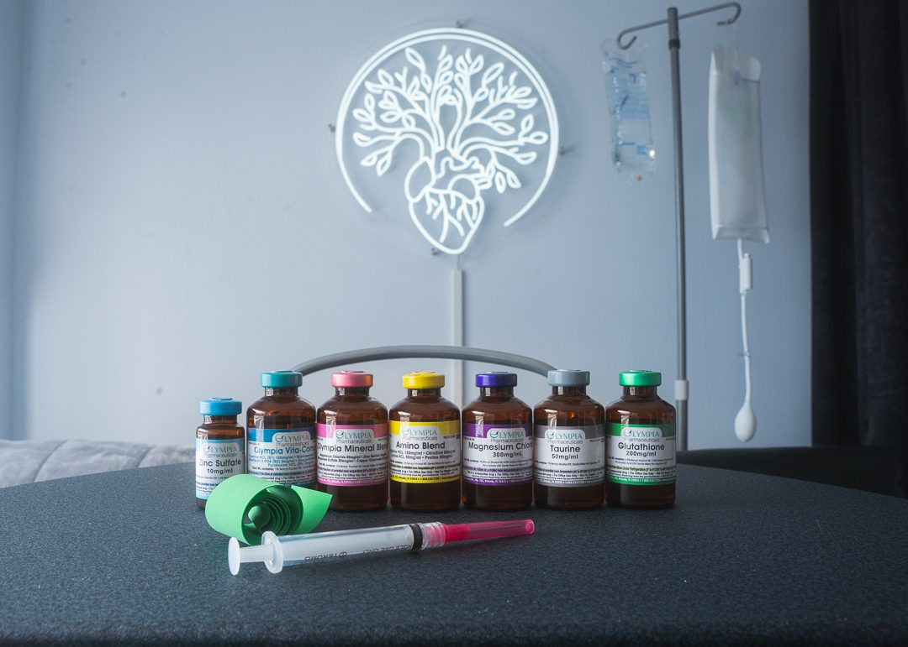

Cellular energy
Support the metabolic machinery that powers every cell, especially when you feel chronically depleted.
NAD+ Therapy
NAD+ infusions and injections for energy, focus, and recovery, delivered with medical oversight in Voorhees, NJ.

Cellular energyAsylum Wellness & IV
NAD+ is a coenzyme your cells use to turn fuel into energy. Levels decline with age and stress, and infusions are used to support cellular energy, mental clarity, and recovery. At Asylum, NAD+ is delivered with medical oversight and titrated to your comfort.
Why people try it
Support the metabolic machinery that powers every cell, especially when you feel chronically depleted.
Many clients report sharper focus and steadier mood in the days following a course of infusions.
Used alongside training and lab-based care as part of a broader recovery and longevity strategy.
Options
Sample pricing for the reference build. Confirm current pricing with our team.
| Option | Best for | From |
|---|---|---|
| NAD+ 250 mg | First-timers, maintenance | $349 |
| NAD+ 500 mg | Established clients, deeper support | $499 |
| NAD+ Injection | Quick top-up between infusions | $75 |
Questions
NAD+ is infused slowly to keep you comfortable. Going too fast can cause a flushing or chest-tightness sensation, so we titrate the drip to your tolerance. A session typically runs one to three hours depending on dose.
Many people start with a short series of infusions and then maintain with periodic sessions or injections. We will recommend a cadence based on your goals.
Often yes. NAD+ pairs well with B12, glutathione, and hydration support. We will build the right combination for you.
Talk with our team about whether NAD+ therapy fits your energy, focus, and recovery goals.